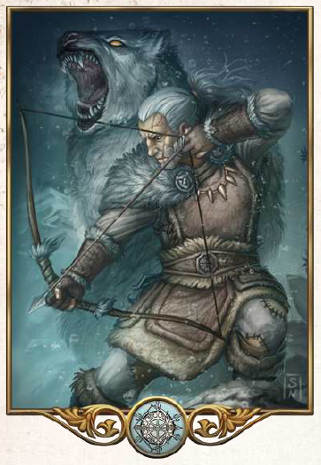

"Das Leben ist nicht einfach. Es ist ein ständiges Ringen, um die bessere Jagdbeute, etwas zu Essen, ein sicheres Nachtlager in der Wildnis und um Schutz vor der Kälte. Niemand, der zaghaft ist, kann in diesen Ringen die Oberhand behalten."
Aspekte: Winter, Eis, Jagd, Entbehrung
Symbole/Wahrzeichen: Pfeil und Bogen, Eiskristall
Heiliges Tier: Firunsbär (Eisbär)
Firun, von seinen Gläubigen auch gern der Alte vom Berg genannt, ist der Gott des Eises und des Winters, aber auch der Jagd. Er gilt vielen als noch gnadenloser als der Totengott Boron und nur, wer seinem Element widersteht, gilt als seiner Gnade würdig. Seine Anhängerschaft besteht zum großen Teil aus Waldläufern und Jägern, deren Leben häufig von Naturgewalten und den Entbehrungen der Wildnis geprägt ist. Gerade in kälteren Gifilden wird Firun aber auch von anderen um Gnade gebeten, wenn der Winter einmal besonders grimm ist. Auch im jagdbegeisterten Adel der großen Reiche hat Firun seine Anhänger. Sein heiliges Tier ist der Eisbär, seine Geweihten tragen meist praktische Kleidung aus Leder und Fellen. In den spärlich gesäten Tempeln und Schreinen des Gottes trifft man seine Priester jedoch nur selten an, da sie weit häufiger in der Wildnis unterwegs sind. Der offizielle Haupttempel des Firunkultes befindet sich in Trallop. Der Weiße Mann, der ranghöchste Priester, ist ständig auf Reisen und man weiß nie, ob in menschlicher Gestalt oder in der eines Eisbären.